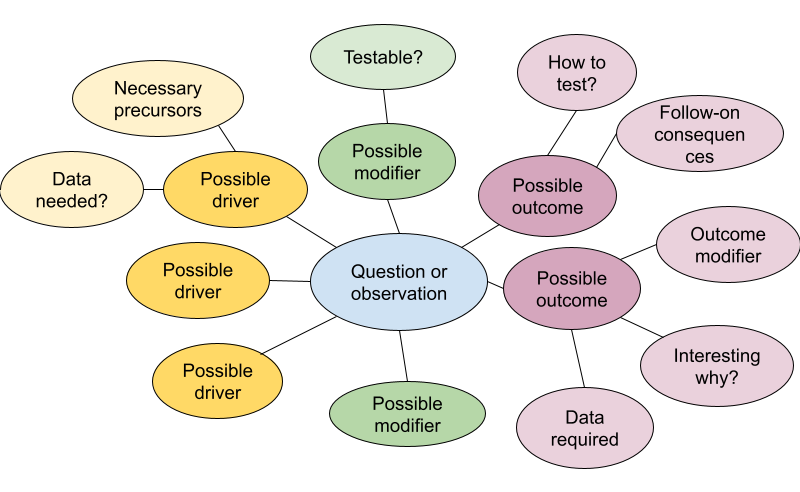
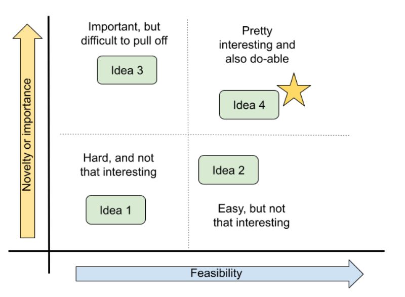
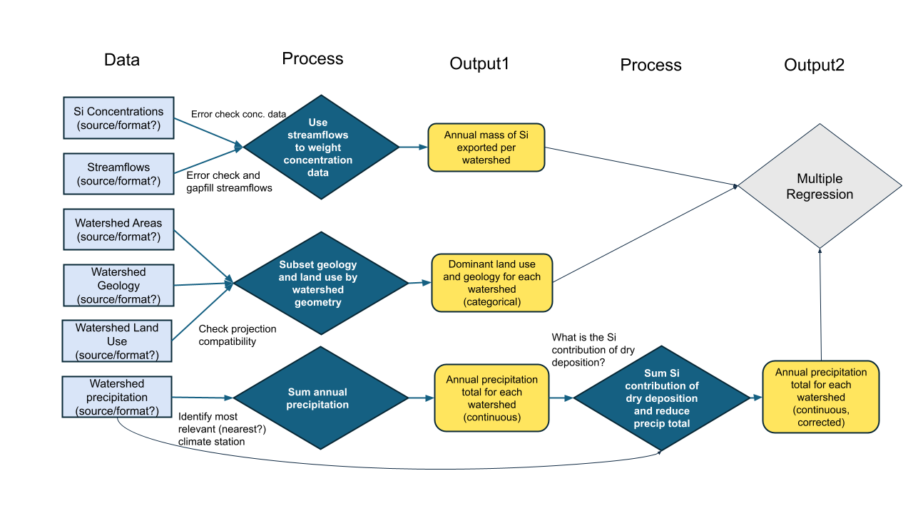
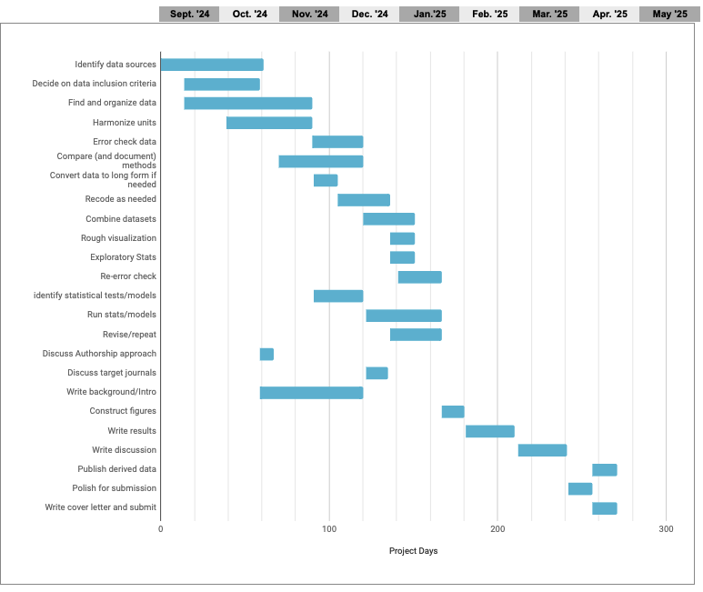
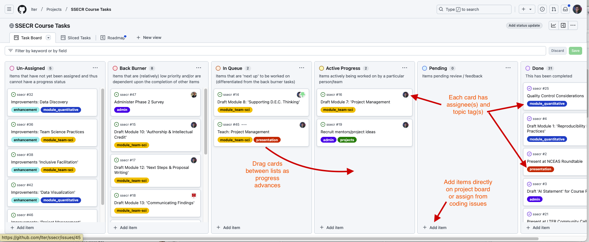
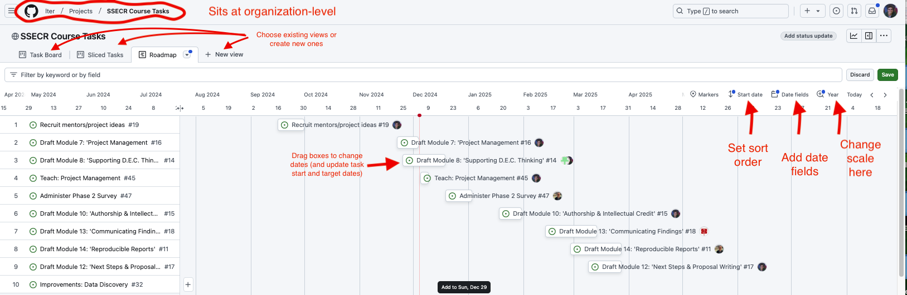

Project Management
Overview
Team science works best when all participants know when and how they can contribute. Effective project management allows team members to work on many tasks asynchronously, without losing track of the overall context or the progress in related areas of the project. The effort required is returned many times in avoided frustration and unnecessary backtracking and duplication of effort. Developing an explicit logic model as a team helps identify and resolve differences in the mental models and assumptions that team members from diverse disciplines bring to an analysis. It also helps clarify all of the information that will be needed and the appropriate order of steps.
Learning Objectives
After completing this module you will be able to:
- Articulate key principles of project management
- Define common approaches for defining project scope
- Identify and make explicit internal logical leaps
- Develop (or refine) the project management framework for your team project
Preparation
No specific preparation required.
Networking Session
The Silica Exports synthesis working group faced a number of coordination challenges – including work context (federal agency and academia), widely dispersed geographic locations (participants and data from 6 continents), and multiple data repositories. Their approach to project management helped them to overcome these obstacles and assemble an exceptional database that is broadly available and a set of novel analyses.
- Kathi Jo Jankowski, Research Ecologist, Upper Midwest Environmental Sciences Center, U.S. Geological Survey
What is Project Management?
There are dozens of formal project management frameworks/approaches, most of which come out of industries (such as software development, construction, and manufacturing) that require teams of people to work together with efficiency and accountability. You’ve probably heard the names tossed around: Agile, Scrum, Lean Sigma Six, Kanban, etc. There are whole industries devoted to training project managers and developing apps to support them.
The trick, for scientific research projects, is to identify the approaches that also allow questions and goals to evolve along the way – and that don’t require a full-time project manager to implement.
| PM Activity | Industry Outcome | Science Outcome |
|---|---|---|
| Build a logical sequence of steps | Ensure needed resources/people tools are available when needed | Know which skills are needed when; know what form the output of each script/analysis needs to take |
| Identify dependencies | Avoid supply chain lags | Know what data you need and when you need them |
| Clarify responsibilities/accountabilities | Document productivity and responsibility | Avoid duplication of effort; keep the project moving; support authorship/credit agreements |
| Identify and mitigate risks | Know when to abort or revise project goals | Assess threats to project success early and make a plan B |
How to Start
Like outlining a paper, there are a few basic steps to developing a solid project management plan. And it’s easy to think you can skip over the first steps because they seem so obvious. The trouble is, they may be obvious to each team member in different ways. Taking the time to make sure you all see them the same way can save worlds of headache down the road.
- Define the project
- Agree on the goal and the timeline
- If the timeline is determined externally (as for SSECR or for most grants), you’ll need to start with the timeline (possibly budget) and scope the project to fit the time and funds you have available.
- Develop a list of the steps needed to get from where you are to where you need to be.
- Place the steps in order and define the inputs and outputs of each step.
- Identify the people responsible for each step and an approximate timeline for its completion.
- Identify time points for check-in and re-evaluation
Honestly, you could do all of this in a spreadsheet, but there are a few types of visualizations that a lot of people find helpful, which we’ll discuss later today. First, though, we’ll remind ourselves of why the investment in planning time is so valuable.
Defining the Project
For defining the project and agreeing on the goals, mind maps are useful individual or group exercises. Mind maps offer a lightly-structured way of exploring a focus area. The graphical approach helps to surface unexpected connections and reveal gaps in understanding. Tools for developing them can be as simple as pen and paper, basic drawing apps, a zoom whiteboard, or online collaboration and project planning tools such as Miro, Mural, and FigJam.
Start with a general topic or question, then expand to the precedents and implications. Then expand from there to the assumptions, modifying conditions, or follow-on implications related to each of your precedents or implications. Often, looking at a problem head-on reveals little new, but surfacing and testing the underlying assumptions can open up fresh territory.

The mind map will likely surface many relevant and un-answered questions, but time is limited. You’ll need to choose one on which to focus. One way to prioritize them is to place them on a two-by-two matrix of payoff v. feasibility. The most important payoff for a particular team may be scientific novelty, practical importance, or whether it’s a fun and engaging question for the group. Often, the most interesting questions will also require the most effort and the group will need to determine what trade-offs they are willing to accept. But sometimes, a question emerges that is both interesting and feasible–perhaps because a new source of data has just become available or simply because no one saw the question from that angle before.

Outline Your Analysis
Once the team has settled on a question and specific set of processes to explore or test, it’s worth sketching out the steps in your analysis. By making the inputs, processing, and outputs of each step explicit, you’ll identify needed data sooner and avoid (some) backtracking.
The process of building an explicit analysis description as a team can quickly reveal mismatches in team members’ mental models and uncover hidden assumptions. Making those (often disciplinary) differences visible early can mitigate some of the biggest risks of interdisciplinary research and also offer a way into the most novel insights. A well-structured analysis plan can also be a touchstone to return to throughout the life of your project, keeping the team on-track and avoiding mission creep.

Plan the Work
Once your team goals and the necessary steps are agreed on, it becomes much easier to build a project plan that clarifies the timeline and team member responsibilities. Especially with limited-term projects such as ours, a Gantt chart can be a particularly valuable way to map out project dependencies and responsibilities. With each task arranged on a timeline, it becomes easier to spot potential dependencies that could otherwise hold up the project. With simultaneous tasks stacked vertically, it becomes apparent when the planned workload is unrealistic.
- Before diving into any specific tool, start by making a list of your goal and the steps necessary to get there.
- Place them into an outline in the order they must proceed.
- Some steps cannot start until others are finished, while others can proceed simultaneously.
- Sequential steps get a new number, while steps that can be done in parallel get the same number with different letters.
- Attach an estimated time frame to each step and identify a responsible team member (tentative at this point).
- Arrange the steps in colored bars along a horizontal timeline.
- Use the visualization to assess which steps are likely to be bottlenecks and when the team may be relying too heavily on one individual for mission-critical work.
A robust support infrastructure exists for the project management profession – including formal training and a multitude of (often pricey) apps. But for the job of managing research collaborations, we’ve found that the single most important factor is whether your collaborators will use the system. For that to happen, they must have easy access to it, ideally without setting up a new account and as part of something they already do every day.
For non-coders, we’ve included a Google sheet template of a Gantt chart, pictured below.

But if you’re already working in GitHub or GitLab to collaborate on code, why not take advantage of GitHub’s project management capabilities? In GitHub, issues from your repos can be assigned to projects (which sit at a level above repos), allowing an overarching view of all the tasks associated with a project. Issues can also be created in the project itself. Both kinds of issues can be assigned to individuals, marked with topical tags, and assigned start and due dates. The examples below draw from the repository we are using to organize the first iteration of this course.

Two additional views make it even easier to track overall progress and individual workloads. The “roadmap” view in GitHub functions like an interactive Gantt chart, once start and target dates are assigned to an issue. In the roadmap view, issues can by dragged forward and back in time and the issue’s start or end date will adjust accordingly. The stack of issues can be sorted by start date, target date, topic tags or assigned collaborator.
The “sliced tasks view” also allows each collaborator to see only their own assigned tasks.

Additional Resources
Workshops & Courses
- LTER Scientific Computing Team. Collaborative Coding with GitHub: Issues. 2024.
- LTER Scientific Computing Team. Collaborative Coding with GitHub: Milestones. 2024.
- LTER Scientific Computing Team. Collaborative Coding with GitHub: Projects. 2024.
- NCEAS Learning Hub & Delta Stewardship Council. Open Science Synthesis: Logic Models and Synthesis Development. 2021.
- NCEAS Project Management Workshop for new synthesis working groups
Web-based Project Management Tools
Open Source
Commercial
- Asana. Task and project management. Free up to 10 members.
- Wrike. Tasks and project management. Capable for individuals. $10 pp per month for teams.
- ClickUp. Capable free plan. Less intuitive to set up.
- Miro. Free for up to three projects. More focus on diagrams and brainstorming than ongoing project management.
- Easy Retro